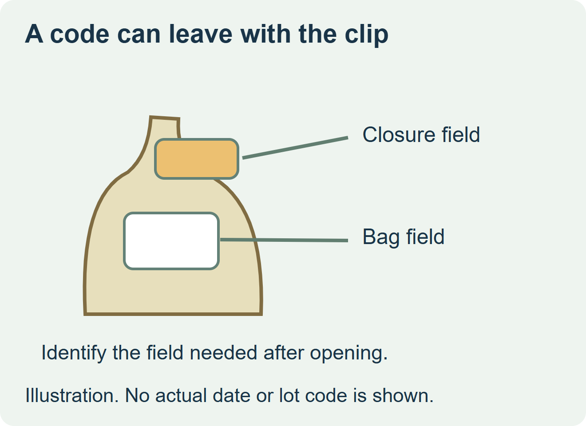
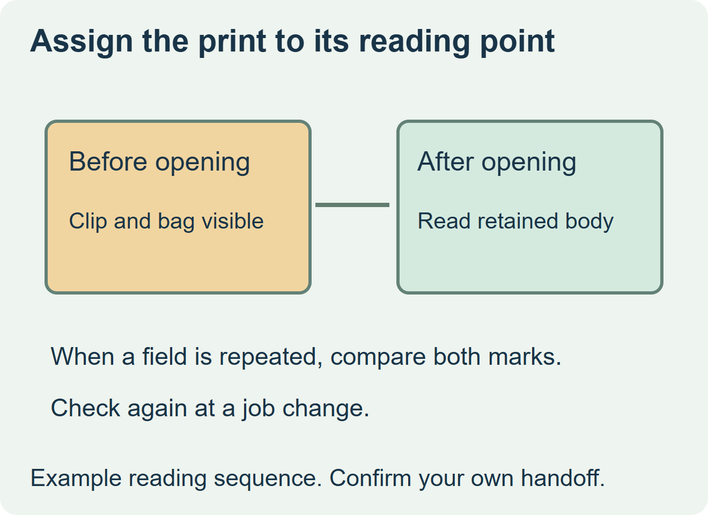

Keep the date or lot on the film or an approved bag-body label if the required field must remain with the bread after the clip is removed. Use a clip field for a reading step before removal if its content and position are accepted. If both carry the same field, check the two outputs together after changeovers.


Start with who needs the information and when
Have the product information owner identify the fields required at packing, at the retailer and after opening. Note which closure is removable and whether staff or shoppers may put another clip on the bag. A clip can carry useful information at the packing station. A code that must be read later needs a surface that stays with the identified pack through that event.
Bedford describes closure formats that can carry dates, lots or brand information, and asks buyers to match the clip to the bag and machine. Videojet’s bakery application note identifies code loss after clip removal and variability in how film presents to the coder. Ask which arrangement the bakery’s actual closer and coder can support. Bedford clip selection and print options and Videojet bread bag coding note
| Reading point | Procurement option | Check on the actual pack |
|---|---|---|
| Field only needed with the original bag closed | Qualified printed closure or clip-mounted format | Read the actual field on the filled, closed loaf. |
| Field must remain after the clip is removed | Agreed direct print on film or a compatible body label | Read the whole field after opening and handling. |
| The same field is printed twice for different views | Both fields sourced from the approved job data | Verify both marks on the same bag at first-off and after a change. |


Quote the bag label as part of the actual sequence
If the choice is a body label, have the packer show where a filled loaf is consistently supported, with folds and end gathers clear of the marked area. Identify whether the field is printed on the roll before application or added at packing. Compare direct film coding if the line can present the film reliably. For the label route, include the coated face, adhesive, roll format and placement in the same proposal.
In a hypothetical bakery run, a clipped date can be seen from the top of the delivery crate. The packing owner also needs the job lot to remain readable on the bag once the clip is removed. That can mean distinct fields, or a matching field retained twice. Record which option is approved. Use the longest actual fields and inspect packed, opened and reclosed samples. Name the source for each mark to avoid printing a prior date onto a bag from the new job.
Preserve the closure function
If you choose a clip code route, the bag and closure supplier should confirm the intended clip geometry, marking area and machine support. Check that label material or graphics stay outside the moving or gripping area. A body-label quotation should identify the actual outside film and the intended application position.
Discuss the unresolved label requirement
Send the bag film, actual filled loaf and closure, fields required at each event, supported marking steps, SKU counts and the intended body label location. Review food label options and prepare a label specification inquiry. The contact page opens an email draft and lists email or WhatsApp for attachments. Supply, proof options, testing, pricing and timing require project confirmation.